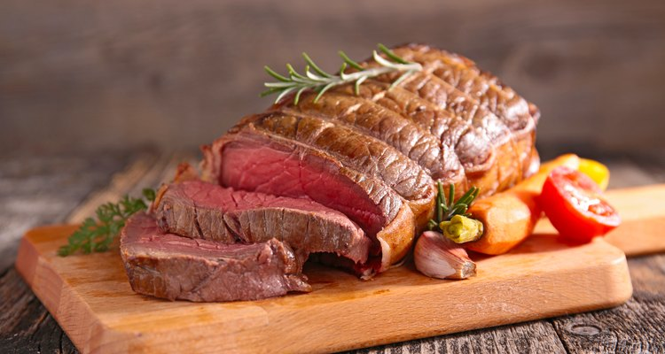

Pot Roast

Description
Quick n dirty pot roast when you don't eat veggies.
Ingredients
- 1 Chuck Roast
- Redmond's sea salt
- Grass fed Beef Tallow
Steps
- On a plate, season roast generously with salt. Leave in fridge for 24hrs on a cooling rack.
- When ready to cook, leave roast on counter for up to 60 minutes to let steak come to room temperature.
- In a large cast-iron skillet over high, heat tallow until very hot. Add roast and sear until a dark crust forms on all sides, about 3 minutes per side.
- Place roast in a crock pot on low, add water until almost covered and cook for 8 - 10 hrs.